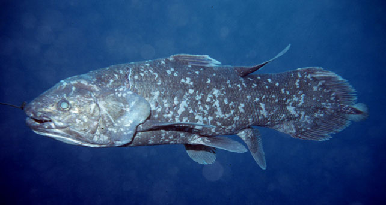
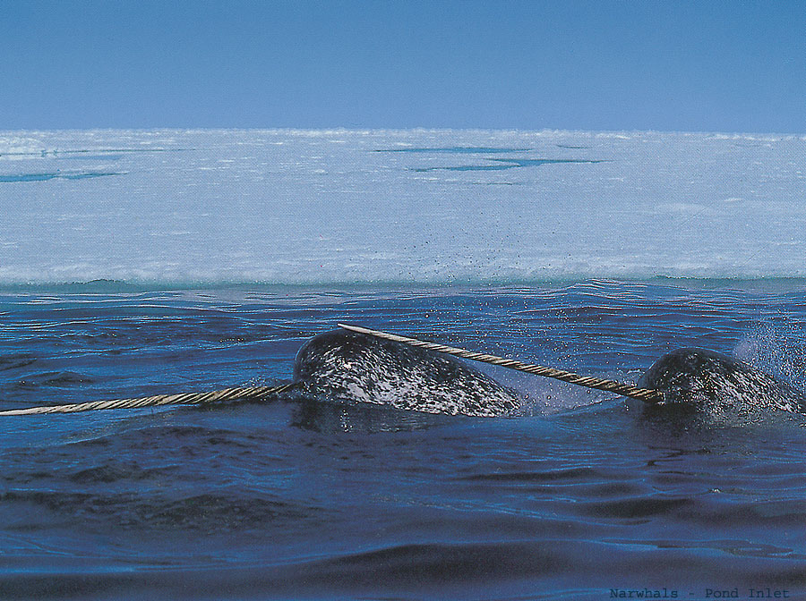

Do any of you belive in bigfoot, yetis, and stuff like that? Have you seen any?Then come here and explain them.
I don't really know... yetis probably do exist, but I doubt they're as mystic as they seem.
This is an easy question... NO.
They don't exist. They actually had someone admit that it was him who was 'bigfoot'.
Ha ha.
Meh. I belive there are plenty of creatures out there we have absolutely no idea exist. Mainly deep sea creatures, though, and very small creatures.
... both of which we're probably killing off at a fast rate.
... both of which we're probably killing off at a fast rate.
I'm Bigfoot.
Do you believe me?
Do you believe me?
No. Besides, how could you prove it?
How could you disprove it?
I'm the lochness monster. See me.

I was reffering more to things we don't know exist than wierd things we think do... "bigfoot" and the like.
Although, you never know....
Although, you never know....
I'm in total agreeance with T_D_L.
This reminds me of a theory I had. From what we know about the galaxy, things seem to get bigger and bigger and smaller and smaller. Patterns come up very often in nature.
Following that logic, one could theorize that nothing ever ends. Things just get infinitely smaller and infinitely bigger.
Yeah, tangent. I know.
This reminds me of a theory I had. From what we know about the galaxy, things seem to get bigger and bigger and smaller and smaller. Patterns come up very often in nature.
Following that logic, one could theorize that nothing ever ends. Things just get infinitely smaller and infinitely bigger.
Yeah, tangent. I know.
I'd like to believe in bigfoot... and it becomes easy, too, if you think that Yetis, Bigfoot, El Chupacabra, and sasquatch are all the same species.
There's another one... I can't think of it though.
It's the tabloids that make it hard. Headline this week? "Bigfoot crashes Wine tasting: He prefers the merlot! Coyote parents guard Alien Babies from the cops! George Bush and Opera!?"
The funny thing is, I didn't make that up.
There's another one... I can't think of it though.
It's the tabloids that make it hard. Headline this week? "Bigfoot crashes Wine tasting: He prefers the merlot! Coyote parents guard Alien Babies from the cops! George Bush and Opera!?"
The funny thing is, I didn't make that up.
I think these creatures and the tales that surround them are worth studying and following up on. There are plenty of animals that were considered cryptozoology at first that turned out to be exntict or actual species. They were mainly breeds of dogs and cats. There have been other creatures proven to be real, like birds and piscine creatures, too.
For example, giant squids were once mythological creatures called krakens. Now, we know that there really are squids that can become up to 100 meters long. We don't call them "krakens", but the cocnept is the same. Basilisks aren't real, but their legends could harken back to a time when monitor lizards were not well known. Are monitor lizards fake because earlier people thought they were basilisks? Of coruse not.
I'm sure if we discovered a real "yeti", it would have an entirely different name and most people would be unlikely to attribute the new species with the legends of the yeti.
For example, giant squids were once mythological creatures called krakens. Now, we know that there really are squids that can become up to 100 meters long. We don't call them "krakens", but the cocnept is the same. Basilisks aren't real, but their legends could harken back to a time when monitor lizards were not well known. Are monitor lizards fake because earlier people thought they were basilisks? Of coruse not.
I'm sure if we discovered a real "yeti", it would have an entirely different name and most people would be unlikely to attribute the new species with the legends of the yeti.
Somewhat related, in the 1950's, scientists found a Coelocanth in the ocean, a creature that dates back to the prehistoric times, that everyone thought was extinct. And it doesn't live very deep under the surface, either.
Plus, it's a very big creature. The fact that it went unnoticed for all of those years suggests that the possibilities of other creatures out there must be limitless.
Plus, it's a very big creature. The fact that it went unnoticed for all of those years suggests that the possibilities of other creatures out there must be limitless.
Hey, can you link me to that, nevermore?
Or say what a Coelocanth is?
Or say what a Coelocanth is?
I said what it is. A fish that dates back to the prehistoric times.
Anyway, here's a picture. I did a report on them in sixth grade, so my memory is shaky, but I think that professional fisherman caught one, and they thought it was a small variation of a whale.
Anyway, here's a picture. I did a report on them in sixth grade, so my memory is shaky, but I think that professional fisherman caught one, and they thought it was a small variation of a whale.

In Animal Crossing I caught a Coelocanth.......what?
No, they're pure bullsh!t.
Narwhals were thought to be pure myth, too.
Picture:
Picture:

Sorry for the double post, but it's a different subject (and my comp won't let me edit).
Did you guys see Supernatural on the WB? the first episode dealt with women in white, a fascinating subject.
Did you guys see Supernatural on the WB? the first episode dealt with women in white, a fascinating subject.
No need to make up an excuse about editing. Double posts are fine, if they're intentional, and you're drawing people's attention to something new.
Double posts are only bad if you post twice in a row, because you don't know that the edit button exists.
Double posts are only bad if you post twice in a row, because you don't know that the edit button exists.
Bigfoot doesn't exist... The "bigfoot" seen from a lot of people is only a man with a lot of razor's problem... hehehehhehehe.....